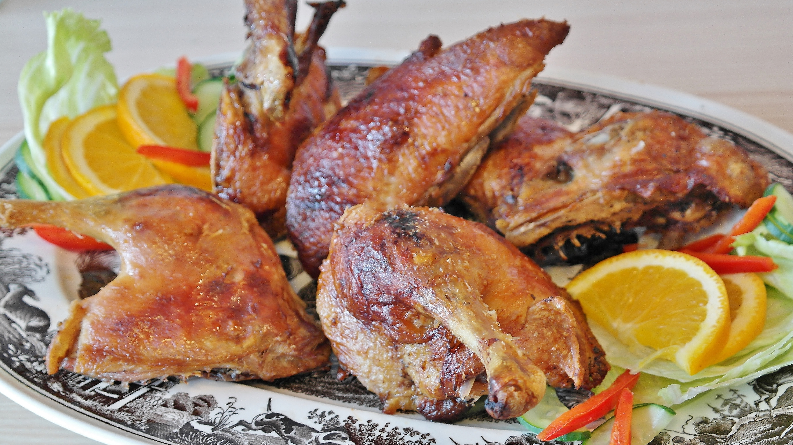
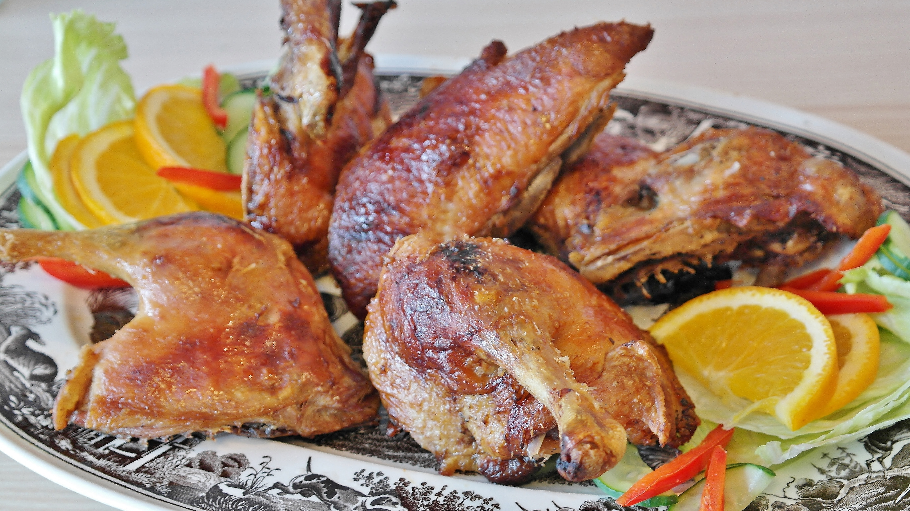

Lady Austrechild Goiswinth is as alluring a chef today as she was when she was 450 years ago. — New York News
About Lady Austrechild Goiswinth
Lady Austrechild Goiswinth was born unto an upper class household in gothic England, and traveled widely and extensively during her life. She is one of 14 children of her father's first marriage, the only one who lived longer than 780 years, and credits the use of phoneix blood for her longevity. Alas, with phoenixes in decline in this modern age, she's found that substituting unicorn horn and powdered dragons blood to be suffice though she plans a rejuveniation ceremony at Mount Olympus to help her live another five hundred years. For more information on this ceremony and to participate, please contact us.
Our Recipes
Although it is known that many, if not all, of these mythical creatures are very difficult to find, once one has obtained the right beast, the menu can be planned accordingly. The tastes are said to be divine, gorgeous, and indeed mythical. Lady Goiswinth has personally tried and tested each of these recipes to ensure that they give the best results, whether you are cooking over an open fire, a roasting pit, modern fan-assisted electric oven, or gas oven- the results should be the same. For authenticity, it is best to consult your local shaman or achlemist to ensure that you have the right ingredients to go with your mythical creature, and if pressed, one can substitute with a good rummage around the woods with the local wilde herbalist.